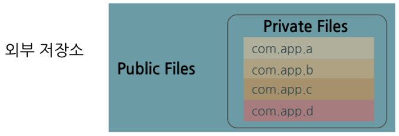
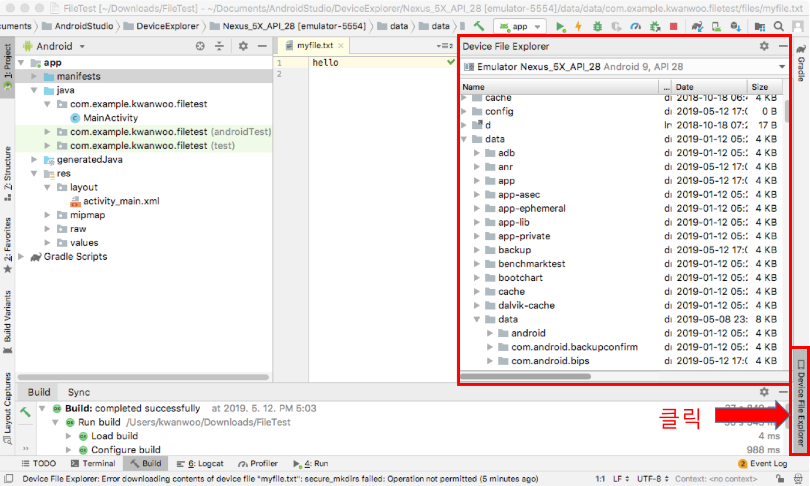
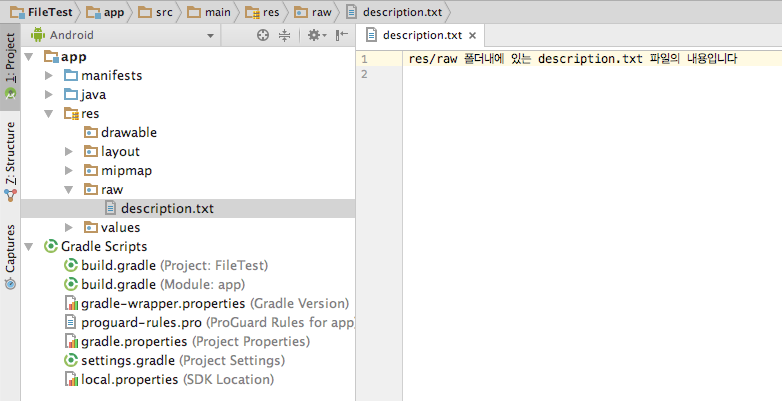
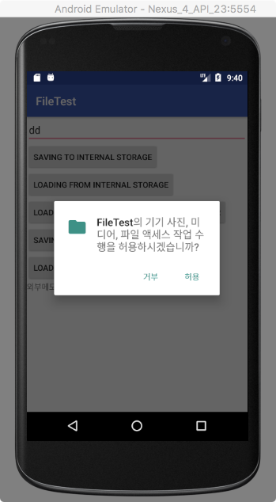
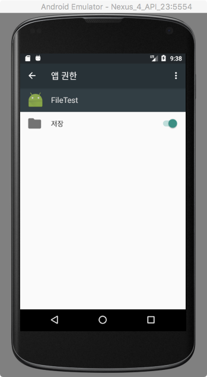
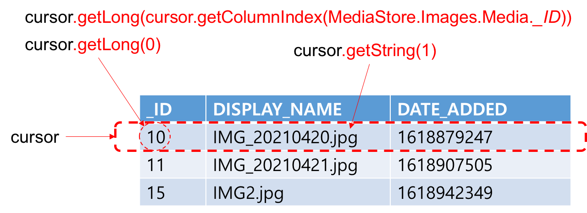

모든 Android 기기에는 용도에 따라 앱별 저장소
와 공유 저장소
의 두 가지 영역으로 구분되고, 실제 저장소 위치는 내부 저장소와 외부 저장소로 구분됩니다.
앱별 저장소
공유 저장소
Android 10 (API 수준 29) 이전 버전의 Android에서 사용하는 외부 저장소는 개별 앱 공간과 공용 공간으로 크게 나뉘어져 있었습니다.

Android 10 (API 수준 29) 부터 Android에서 사용하는 외부 저장소는 공용공간이 사진 및 동영상, 음악, 다운로드 구조로 분리되어 관리되는 범위 지정 저장소(Scoped Storage)를 기본으로 합니다.
안드로이드 시스템의 내부 저장소 내에 앱별로 파일을 구성할 수 있는 두 가지 디렉터리가 제공됩니다.
영구 파일 목록 보기
Context 객체의 fileList() 메소드
Array<String> files = context.fileList();영구 파일에 접근을 위한 File 객체 생성 예
File file = new File(context.getFilesDir(), filename);캐시 파일에 접근을 위한 File 객체 생성 예
File file = new File(context.getCachesDir(), filename);파일 삭제
파일을 표시하는 File 객체의 delete() 메서드
cacheFile.delete();앱 컨텍스트의 deleteFile() 메서드.: 파일 이름을 전달합니다.
context.deleteFile(cacheFileName);안드로이드에서 자바의 모든 입출력 기능을 다 사용할 수 는 없고, 보안상의 제약으로 인해 Context 클래스에서 보안이 적용된 파일 관리 메서드를 별도로 제공하며, 이를 이용하여 파일을 Open한다.
FileOutputStream openFileOutput (String name, int mode)
FileInputStream openFileInput (String name)mode
| 모드 | 설명 |
|---|---|
| MODE_RPIVATE | 혼자만 사용하는 배타적인 모드로 파일을 생성. (디폴트) |
| MODE_APPEND | 파일이 이미 존재할 경우 덮어쓰기 모드가 아닌 추가 모드로 Open. |
OpenFileOuput 사용 예제
package com.example.kwanwoo.filetest;
... 생략 ...
private void saveToInternalStorage() {
String data = input.getText().toString();
try {
FileOutputStream fos = openFileOutput
("myfile.txt", // 파일명 지정
Context.MODE_APPEND);// 저장모드
PrintWriter out = new PrintWriter(fos);
out.println(data);
out.close();
result.setText("file saved");
} catch (Exception e) {
result.setText("Exception: internal file writing");
}
}myfile.txt
는 디바이스의 data/data/com.example.kwanwoo.filetest/files/ 에 위치
Android Studio의 좌측 하단에 있는 Device File Explorer 탭을 열어 해당 파일이 생성되었는 지 확인 가능합니다.

OpenFileInput 사용 예제
private void loadFromIntenalStorage() {
try {
FileInputStream fis = openFileInput("myfile.txt");//파일명
BufferedReader buffer = new BufferedReader
(new InputStreamReader(fis));
String str = buffer.readLine(); // 파일에서 한줄을 읽어옴
// 파일에서 읽은 데이터를 저장하기 위해서 만든 변수
StringBuffer data = new StringBuffer();
while (str != null) {
data.append(str + "\n");
str = buffer.readLine();
}
buffer.close();
result.setText(data);
} catch (FileNotFoundException e) {
result.setText("File Not Found");
} catch (Exception e) {
result.setText("Exception: internal file reading");
}
}안드로이드 시스템의 외부 저장소 내에 앱별로 파일을 구성할 수 있는 두 가지 디렉터리가 제공됩니다.
Android 4.4. (API 수준 19) 이상에서는 앱별 외부 저장소를 접근하기 위한 권한은 필요하지 않음
앱별 외부 저장소에 저장된 파일은 앱을 제거할 때 삭제 됨
외부 저장소를 사용하기 전에 사용 가능성 검사
public boolean isExternalStorageWritable() {
String state = Environment.getExternalStorageState();
if (Environment.MEDIA_MOUNTED.equals(state)) {
result.setText("외부메모리 읽기 쓰기 모두 가능");
return true;
}
return false;
}
public boolean isExternalStorageReadable() {
String state = Environment.getExternalStorageState();
if (Environment.MEDIA_MOUNTED.equals(state)||
Environment.MEDIA_MOUNTED_READ_ONLY.equals(state)) {
result.setText("외부메모리 읽기만 가능");
return true;
}
return false;
}외부 저장소의 앱 전용(private) 저장소 디렉토리 접근하기
예제 코드
// 앱 전용 저장소 (sdcard/Android/data/com.example.kwanwoo.filetest/files/Download를 사용할 경우
File path = getExternalFilesDir(Environment.DIRECTORY_DOWNLOADS);
File f = new File(path, "external.txt"); // 경로, 파일명
FileWriter write = new FileWriter(f, true); // 지정된 파일에 문자 스트림 쓰기
PrintWriter out = new PrintWriter(write); // formatted 출력 스트림
out.println(data);
out.close();포함시킬 파일은 res/raw에 복사해 둔다

리소스의 파일을 읽을 때는 Resources 클래스의 openRawResource 메서드를 사용하며, id로는 확장자를 뺀 파일명을 부여한다.
InputStream openRawResource (int id) private void loadFromRawResource() {
try {
InputStream is = getResources().openRawResource(R.raw.description);
BufferedReader buffer = new BufferedReader
(new InputStreamReader(is));
String str = buffer.readLine(); // 파일에서 한줄을 읽어옴
// 파일에서 읽은 데이터를 저장하기 위해서 만든 변수
StringBuffer data = new StringBuffer();
while (str != null) {
data.append(str + "\n");
str = buffer.readLine();
}
buffer.close();
result.setText(data);
} catch (Exception e) {
result.setText("Exception: raw resource file reading");
}
}Android 9(API 수준 28) 이하를 실행하는 기기에서는 (공유) 외부 저장소를 사용하기 위해서 관련 권한을 요청해야 합니다. 다음과 같이 앱 매니페스트 파일의 권한 선언에 android:maxSdkVersion 속성을 추가하여 이 조건을 적용할 수 있습니다.
<uses-permission android:name="android.permission.WRITE_EXTERNAL_STORAGE"
android:maxSdkVersion="28" />Android 10(API 수준 29) 이상를 실행하는 기기에서 범위지정 저장소를 사용하는 경우에는, 불필요하게 권한을 요청할 필요가 없습니다.
권한 요청 절차
다른 앱이 미디어 컬렉션에 추가한 파일을 접근할려면 Manifest 파일에서 READ_EXTERNAL_STORAGE 권한을 선언
<manifest ...>
<uses-permission android:name="android.permission.READ_EXTERNAL_STORAGE"/>
</manifest>권한의 보유 여부를 확인해야 합니다.
private boolean haveStoragePermission() {
return ContextCompat.checkSelfPermission(this,
Manifest.permission.READ_EXTERNAL_STORAGE)
== PackageManager.PERMISSION_GRANTED;
}앱에 필요한 권한이 아직 없는 경우, 필요한 권한을 요청합니다.
앱은 ActivityCompat.requestPermissions() 메서드를 호출하여 적절한 권한을 요청해야 합니다.
private final int READ_EXTERNAL_STORAGE_REQUEST = 1;
private void requestStoragePermission() {
String[] PERMISSIONS_STORAGE = {
Manifest.permission.READ_EXTERNAL_STORAGE
};
ActivityCompat.requestPermissions(
MainActivity.this,
PERMISSIONS_STORAGE,
READ_EXTERNAL_STORAGE_REQUEST
);
}ActivityCompat.requestPermissions() 메서드가 호출되면 다음과 같은 대화상자가 나타나서, 앱 사용자는 권한의 승인/거부를 앱 실행 중에 결정할 수 있습니다.

사용자가 응답하면, 시스템은 앱의 onRequestPermissionsResult() 메서드를 호출하여 사용자 응답에 전달합니다.
이 콜백에는 여러분이 requestPermissions()에 전달한 것과 동일한 요청 코드가 전달됩니다. 예를 들어, 앱이 READ_EXTERNAL_STORAGE_REQUEST 요청 코드가 requestPermissions()를 통해 요청된 경우, 다음과 같은 콜백 메서드를 가질 수 있습니다.
public void onRequestPermissionsResult(int requestCode, String permissions[], int[] grantResults) {
if (grantResults.length > 0
&& grantResults[0] == PackageManager.PERMISSION_GRANTED) { // permission was granted
switch (requestCode) {
case READ_EXTERNAL_STORAGE_REQUEST:
getImagesFromMediaStore();
break;
}
} else { // permission was denied
Toast.makeText(getApplicationContext(),"접근 권한이 필요합니다",Toast.LENGTH_SHORT).show();
}
}
앱의 권한 설정은 설정>애플리케이션>[해당 앱]>권한에서 언제든지 변경할 수 있음

시스템은 자동으로 외부 저장소의 볼륨을 스캔하여, 다음과 같이 미디어 파일을 잘 정의된 미디어 컬렉션에 추가합니다.
| 미디어 파일 | 저장 디렉토리 | 미디어 컬렉션 |
|---|---|---|
| 이미지 | DCIM/ 및 Pictures/ 디렉터리 | MediaStore.Images 테이블 |
| 동영상 | DCIM/, Movies/ 및 Pictures/ 디렉터리 | MediaStore.Video 테이블 |
| 오디오 | Alarms/, Audiobooks/, Music/, Notifications/, Podcasts/ 및 Ringtones/ 디렉터리 | MediaStore.Audio 테이블 |
| 다운로드 파일 | Download/ 디렉토리 | Android 10(API 수준 29) 이상을 실행하는 기기에서는 이러한 파일이 MediaStore.Downloads 테이블에 저장 |
미디어 컬렉션으로부터 특정 조건을 만족하는 미디어를 찾으려면 다음과 같이 앱 컨텍스트에서 검색한 ContentResolver 객체의 query() 메소드 사용
public final Cursor query (Uri uri,
String[] projection,
String selection,
String[] selectionArgs,
String sortOrder)| Parameters | 설명 | null 여부 |
|---|---|---|
| uri | 검색할 미디어 컬렉션의 URI (content:// scheme형식). | X |
| projection | 반환할 미디어 테이블의 컬럼 리스트 | O |
| selection | 반환할 미디어 테이블의 레코드를 거르는 필터식 문자열, (SQL WHERE 절 형식, 단 WHERE는 제거) | O |
| selectionArgs | selection에 포함된 ?에 대체될 문자열 리스트 | O |
| sortOrder | 반환할 레코드의 정렬 순서 (SQL ORDER BY 형식, 단 ORDER BY는 제거) | O |

query() 메소드 사용 예제
이미지 컬렉션 테이블로부터 모든 이미지 검색 (검색 결과셋 데이터는 이미지 컬렉션 테이블의 모든 컬럼을 포함한 테이블)
Uri uri = MediaStore.Images.Media.EXTERNAL_CONTENT_URI;
Cursor cursor = getApplicationContext().getContentResolver().query(
uri,
null,
null,
null,
null
);이미지 컬렉션 테이블로부터 MIME_TYPE 컬럼 값이 image/jpeg
인 모든 이미지 검색 (검색 결과셋 데이터는_ID, DISPLAY_NAME, OWNER_PACKAGE_NAME 컬럼으로 구성된 테이블)
Uri uri = MediaStore.Images.Media.EXTERNAL_CONTENT_URI;
String[] projection = new String[] {
MediaStore.Images.Media._ID,
MediaStore.Images.Media.DISPLAY_NAME,
MediaStore.Images.Media.OWNER_PACKAGE_NAME
};
String selection = MediaStore.Images.Media.DISPLAY_NAME + " = ?";
String[] selectionArgs = new String[] { "image/jpeg" };
Cursor cursor = getApplicationContext().getContentResolver().query(
uri,
projection,
selection,
selectionArgs,
null
);쿼리 결과는 결과셋 자체가 리턴되지 않으며 결과셋 테이블 위치를 가리키는 커서(Cursor)로 리턴된다.
커서가 가리키는 결과셋 레코드로부터 컬럼의 값을 얻기 위해서는 컬럼의 타입에 따라서 getLong, getString, getDouble 등의 메소드를 이용한다. 
| 메서드 | 설명 |
|---|---|
| close | 결과셋을 닫는다. |
| getColumnCount | 컬럼의 개수를 구한다 |
| getColumnIndex | 이름으로부터 컬럼 번호를 구한다. |
| getColumnName | 번호로부터 컬럼 이름을 구한다. |
| getCount | 결과셋의 레코드 개수를 구한다. |
| getLong | 컬럼값을 Long형 정수로 구하며 인수로 컬럼 번호를 전달한다. |
| getDouble | 컬럼값을 실수로 구한다. |
| getString | 컬럼값을 문자열로 구한다. |
| moveToFirst | 첫 레코드 위치로 이동하며, 결과셋이 비어있을 시 false를 리턴한다. |
| moveToLast | 마지막 레코드 위치로 이동하며, 결과셋이 비어있을 시 false를 리턴한다. |
| moveToNext | 다음 레코드 위치로 이동하며, 마지막 레코드이면 false를 리턴한다. |
| moveToPrevious | 이전 레코드로 이동하며, 첫 레코드이면 false를 리턴한다. |
| moveToPosition | 임의의 위치로 이동한다. |
예제
private void getImagesFromMediaStore() {
...
Cursor cursor = getApplicationContext().getContentResolver().query(
uri,
projection,
selection,
selectionArgs,
null
);
StringBuffer data = new StringBuffer();
int idColumn = cursor.getColumnIndex(MediaStore.Images.Media._ID);
int nameColumn = cursor.getColumnIndex(MediaStore.Images.Media.DISPLAY_NAME);
int ownerColumn = cursor.getColumnIndex(MediaStore.Images.Media.OWNER_PACKAGE_NAME);
while (cursor.moveToNext()) {
long id = cursor.getLong(idColumn);
String name = cursor.getString(nameColumn);
long owner = cursor.getLong(ownerColumn);
data.append(id +" "+name+" ["+owner+"]\n");
}
result.setText(data);
} SimpleCursorAdapter를 이용하여 간편하게 리스트 뷰(어댑터 뷰)에 query() 결과를 출력
SimpleCursorAdapter (Context context,
int layout, // 어댑터 뷰 항목 표현을 위한 레이아웃
Cursor c, // 쿼리 결과를 가리키는 커서
String[] from, // 쿼리 결과에서 표시할 테이블 열들
int[] to, // 테이블 열의 값을 출력할 뷰 ID
int flags) // 보통은 0 예제
ListView listView = findViewById(R.id.listview);
SimpleCursorAdapter adapter = new SimpleCursorAdapter(
getApplicationContext(),
R.layout.item,
cursor,
new String[] {
MediaStore.Images.Media._ID,
MediaStore.Images.Media.DISPLAY_NAME,
MediaStore.Images.Media.OWNER_PACKAGE_NAME
},
new int[] {
R.id.item_id,
R.id.item_name,
R.id.item_owner
},
0
);
listView.setAdapter(adapter);<LinearLayout xmlns:android="http://schemas.android.com/apk/res/android"
android:orientation="horizontal"
android:layout_width="match_parent"
android:layout_height="match_parent"
android:padding="5dp">
<TextView
android:id="@+id/item_id"
android:layout_width="wrap_content"
android:layout_height="wrap_content"
android:padding="5dp"
android:gravity="center"
/>
<TextView
android:id="@+id/item_name"
android:layout_width="wrap_content"
android:layout_height="wrap_content"
android:padding="5dp"
android:layout_weight="1"
android:gravity="center"
/>
<TextView
android:id="@+id/item_owner"
android:layout_width="wrap_content"
android:layout_height="wrap_content"
android:padding="5dp"
android:layout_weight="1"
android:gravity="center"
/>
</LinearLayout>기존 컬렉션에 미디어 항목을 추가하는 경우 다음과 유사한 코드를 작성하면 됩니다.
// Add a specific media item.
ContentResolver resolver = getApplicationContext()
.getContentResolver();
// Find all image files on the primary external storage device.
// On API <= 28, use VOLUME_EXTERNAL instead.
Uri imageCollection = MediaStore.Images.Media.getContentUri(
MediaStore.VOLUME_EXTERNAL_PRIMARY);
// Publish a new picture.
ContentValues newImageDetails = new ContentValues();
newImageDetails.put(MediaStore.Images.Media.DISPLAY_NAME,
"My Image.jpg");
// Keeps a handle to the new image's URI in case we need to modify it
// later.
Uri myFavoriteSongUri = resolver
.insert(imageCollection, newSongDetails);앱이 미디어 파일에 쓰기 작업을 하는 것과 같이 많은 시간이 소요되는 작업을 수행한다면, 작업 처리 동안에 앱이 독점적으로 파일을 엑세스 할 필요가 있습니다.
예제: 기존 이미지 파일을 복사하여 미디어 컬렉션에 추가
public void addCopiedImageToMediaStore() {
ContentResolver resolver = getApplicationContext()
.getContentResolver();
Uri imageCollection = MediaStore.Images.Media.getContentUri(
MediaStore.VOLUME_EXTERNAL_PRIMARY);
// 미디어 컬렉션에 추가할 이미지 이름 및 소유자 정보를 UI에서 획득
String imgName = mName.getText().toString();
String imgOwner = mOwner.getText().toString();
ContentValues newImageDetails = new ContentValues();
newImageDetails.put(MediaStore.Images.Media.DISPLAY_NAME, imgName);
newImageDetails.put(MediaStore.Images.Media.OWNER_PACKAGE_NAME,imgOwner);
// 작업 중인 파일에 대한 독점적인 권한 설정
newImageDetails.put(MediaStore.Images.Media.IS_PENDING, 1);
// 이미지 컬렉션에 이미지 항목 추가
Uri newImageUri = resolver.insert(imageCollection, newImageDetails);
try {
// 추가할 이미지 항목에 대한 출력 스트림 획득
OutputStream out = resolver.openOutputStream(newImageUri);
// 복사할 이미지 항목에 대한 입력 스트림 획득
InputStream in = resolver.openInputStream(
ContentUris.withAppendedId(
imageCollection, // image collection uri
Long.valueOf(mId.getText().toString())) // 복사할 image id
);
int size = in.available(); // 복사할 이미지 데이터 크기
byte[] bytes = new byte[size]; // 복사할 이미지 데이터의 저장 버퍼 생성
in.read(bytes); // 이미지 데이터를 입력 스트림에서 읽어 버퍼에 저장
out.write(bytes); // 버퍼 내용을 출력 스트림에 쓰기
in.close();
out.close();
} catch (FileNotFoundException e) {
e.printStackTrace();
} catch (IOException e) {
e.printStackTrace();
}
newImageDetails.clear();
// 해당 파일에 대한 독점적인 권한 해제
newImageDetails.put(MediaStore.Images.Media.IS_PENDING, 0);
resolver.update(newImageUri, newImageDetails, null, null);
}앱이 소유한 미디어 파일의 업데이트는 특별한 권한 없이 아래와 같은 방법으로 진행된다.
ContentResolver resolver = getApplicationContext()
.getContentResolver();
Uri imageCollection = MediaStore.Images.Media.EXTERNAL_CONTENT_URI;
long imageId; // 업데이트할 이미지 항목의 MediaStore.Images.Media._ID
Uri imageUri = ContentUris.withAppendedId(
imageCollection,
imageId);
String newImageName; // 업데이트할 이미지 항목의 이름
ContentValues updatedImgDetails = new ContentValues();
updatedImgDetails.put(MediaStore.Images.Media.DISPLAY_NAME,
newImageName);
// 이미지 항목의 업데이트
int numImagesUpdated = resolver.update( imageUri, updatedImgDetails, null, null);다른 앱이 소유한 미디어 파일의 업데이트는 앱이 범위 지정 저장소를 사용하는 경우에, 원칙적으로 RecoverableSecurityException이 발생되면서 거부된다.
다음 코드 스니펫에서는 특정 항목에 대한 쓰기 권한을 앱에 부여하도록 요청하는 방법을 예시한다.
try {
// 이미지 항목의 업데이트
int numImagesUpdated = resolver.update( imageUri, updatedImgDetails, null, null);
} catch (SecurityException securityException) {
if (Build.VERSION.SDK_INT >= Build.VERSION_CODES.Q) {
RecoverableSecurityException recoverableSecurityException;
if (securityException instanceof RecoverableSecurityException) {
recoverableSecurityException =
(RecoverableSecurityException)securityException;
} else {
throw new RuntimeException(
securityException.getMessage(), securityException);
}
IntentSender intentSender =recoverableSecurityException.getUserAction()
.getActionIntent().getIntentSender();
startIntentSenderForResult(intentSender, image-request-code,
null, 0, 0, 0, null);
} else {
throw new RuntimeException(
securityException.getMessage(), securityException);
}
}앱이 생성하지 않은 미디어 파일을 수정해야 할 때마다 이 프로세스를 완료합니다.
미디어 저장소에서 앱에 더 이상 필요하지 않은 항목을 삭제하려면 다음 코드 스니펫과 비슷한 로직을 사용합니다.
ContentResolver resolver = getApplicationContext().getContentResolver();
Uri imageCollection = MediaStore.Images.Media.getContentUri(
MediaStore.VOLUME_EXTERNAL_PRIMARY);
Uri imageUri = ContentUris.withAppendedId(
imageCollection,
imageId
);
int numImagesRemoved = resolver.delete(imageUri, null, null);범위 지정 저장소를 사용하는 경우에는 미디어 항목 업데이트에서 설명한 대로, 앱이 삭제하려는 각 파일의 RecoverableSecurityException을 포착해야 합니다.